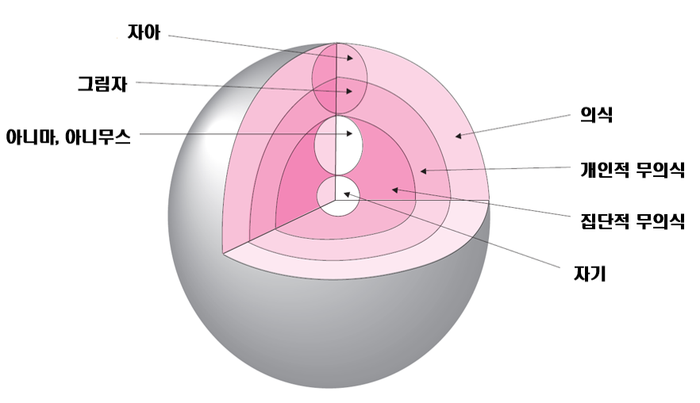

구스타프 융(Carl Gustav Jung)은 인간 심리를 의식과 무의식이 상호작용하는 역동적 체계로 이해하였으며, 특히 무의식이 상징을 통해 스스로를 표현한다고 보았다. 융에게 상징은 단순히 사물을 대신하는 표상이 아니라, 말로 완전히 설명될 수 없는 심리적 경험이 의식과 무의식의 경계에서 드러나는 표현 방식이다. 따라서 상징은 고정된 의미를 갖지 않으며, 개인의 삶의 맥락, 심리 상태, 경험 시점, 관계적 환경에 따라 다르게 작용한다. 또한, 상징은 내담자가 직면한 문제, 관계적 갈등, 잠재적 욕구 등 다양한 심리적 층위를 동시에 담아내는 복합적 도구로 이해될 필요가 있다.
1. 상징의 정의와 의미의 확장성
1) 융에게 상징은 무의식과 의식 간 소통의 다리역할을 한다. 단순히 과거 경험의 흔적이 아니라, 현재 심리 상태와 미래 방향성을 동시에 내포하는 복합적 표현이다. 동일한 상징이라도 내담자의 경험과 정서적 반응, 발달 단계, 사회적 맥락에 따라 다르게 작용할 수 있으며, 단일 의미로 환원될 수 없다.
2) 상징은 억압된 감정, 미해결된 과거 경험뿐 아니라, 미발견된 잠재적 가능성과 내적 자원까지 담고 있다. 예를 들어, 반복되는 소품이 초기에는 방어적 기능을 수행하다가, 회기가 진행되면서 통합과 자기 이해의 매개로 변화할 수 있다. 이를 통해 상징은 단순한 회상이나 진단적 도구가 아니라, 발달과 적응을 반영하는 역동적 신호로 해석될 수 있다.
2. 무의식의 역할과 상징의 기능
융은 무의식을 인간 심리의 자율적 조정 체계로 강조하였다. 무의식은 제거해야 할 병리적 영역이 아니라, 개인이 삶의 변화와 위기를 조정하고 새로운 균형을 형성하도록 돕는 핵심 동력이다.
상징은 무의식이 의식과 소통하기 위한 심리적 언어로 기능한다. 억압된 감정이나 미해결 경험을 의식으로 끌어올리며, 동시에 잠재적 정서 변화와 새로운 경험을 제시한다. 따라서 상징은 과거의 흔적이 아니라, 현재 과제를 해결하고 미래 가능성을 탐색하는 통로로 작용한다.
상징의 기능은 다음과 같이 확대 이해할 수 있다:
1) 내담자가 반복적 상징을 통해 심리적 주제와 정서를 안전하게 탐색하도록 지원
2) 상징의 변형과 이동을 관찰함으로써 내담자의 적응과 발달 상태를 파악
3) 잠재적 갈등이나 억압된 욕구를 상징적으로 표현함으로써 심리적 통합 가능성을 제공
3. 상징의 해석과 상담자의 역할
상징은 해석 이전에 먼저 존중되어야 하는 심리적 표현이다. 충분히 경험되고 의식 속에서 숙성될 때, 상징은 심리적 통합과 자기 이해를 촉진한다. 즉, 상징은 설명되는 것보다 경험되는 것에 가까운 특성을 지닌다.
상담자는 상징을 분석하거나 결론짓는 위치보다, 무의식이 상징을 통해 무엇을 표현하는지 관찰하고 이해하는 태도를 유지해야 한다. 성급한 해석이나 판단은 내담자의 자연스러운 표현을 제한할 수 있으며, 상징의 자율적 전개를 방해할 위험이 있다. 따라서 상담자는 상징의 의미를 기다리며 관찰하고, 변화와 반복 속에서 의미를 탐색할 수 있도록 심리적 공간을 확보해야 한다.
융의 관점은 해석 절제와 유보의 기준을 제공한다. 해석을 성급하게 제시하면 내담자의 심리적 흐름이 방해받거나 상징이 조기에 고정될 수 있다. 상담자는 상징의 의미를 점진적으로 드러날 수 있도록 기다리는 태도를 유지함으로써 상담 장면의 안전성과 심리적 신뢰성을 확보한다.

4. 집단 무의식과 원형 개념
융은 개인 무의식 외에도 집단 무의식(collective unconscious)을 제시하였다. 이는 모든 인간이 공유하는 보편적 심리 구조로, 원형(archetype)과 상징을 포함한다.
1) 원형은 인간 경험의 근본적 패턴을 반영하며 반복적 심리적 주제와 상징적 이미지를 내포한다.
예: 어머니, 영웅, 그림자, 태양
2) 원형은 개인의 경험과 결합하여 모래놀이 장면에서 반복되는 상징, 구조, 배치로 나타날 수 있다
3) 상담자는 원형을 인식하되, 개별 내담자의 맥락과 심리적 상태에 맞춰 해석해야 한다
4) 원형 개념은 상징이 개인 경험을 초월한 보편적 심리 구조와 연결되어 있음을 보여주며, 해석 과정에서 단일 의미를 강요하지 않도록지도한다.
5. 아니마·아니무스와 그림자
융은 내적 심리 구조를 설명하기 위해 아니마(Anima)와 아니무스(Animus), 그림자(Shadow)개념을 정의하였다.
1) 아니마: 남성 내면의 여성적 요소
2) 아니무스: 여성 내면의 남성적 요소
3) 그림자: 개인이 인정하지 않거나 억압한 성격 요소
이들를 인식하면서도, 상징적 변화와 내담자 맥락을 존중하여 해석해야 한다. 이러한 접근은 내담자의 심리적 통합과 자기 이해를 촉진하는 핵심 기준이 된다.